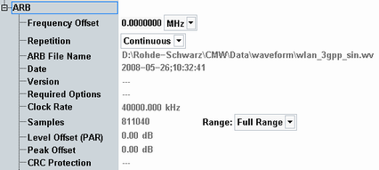
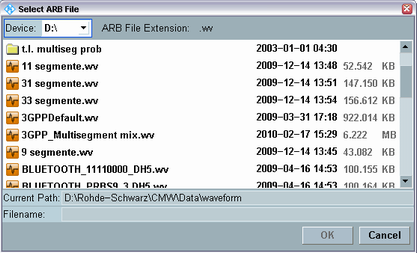
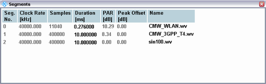

The parameters in the "ARB" section show information about the selected ARB file and define how often it is processed.
Loading an ARB file To select a waveform file that is stored on the internal hard disk, press the softkey-hotkey combination "ARB > Select ARB File". |

Defines a frequency offset to be imposed at the baseband. In the standalone scenario, the offset results in an equivalent frequency offset at the RF.
Remote command:- In "Continuous" mode, the GPRF generator cycles through the file according to the ARB trigger settings until the generator is switched off. The "Cycles" and "Additional Samples" are hidden and ignored.
- In "Single Shot" mode, the file is processed N times where N is the selected number of "Cycles". The multi-segment repetition mode is automatically adjusted to "Auto". The "Additional Samples" extend the processing time.
The total number of samples in the waveform file is displayed below. N additional samples extend the processing time by N/<Samples> cycles.
Shows the selected waveform file and the file properties (date, version, clock rate, ...).
The GPRF generator can load all samples or a proper subrange starting at the first sample.
The "Level Offset (PAR)" and "Peak Offset" parameters can be specified in WinIQSIM2. The PAR is equal to the absolute value of the difference between the "RMS Offset" and the "Peak Offset" defined in WinIQSIM2 (crest factor).
To select a waveform file that is stored on the internal hard disk, press "ARB > Select ARB File..." softkey:

If you load a multi-segment waveform file, an additional hotkey "ARB > Segments..." opens the segment list:

Conditions for processed waveform files
To process a multi-segment waveform file, the clock rates of all segments must be equal. The waveform files require the options for all included network standards.
The R&S CMW supports waveform files with a size up to 1024 MB. The maximum number of processed segments is 32. Further segments are not processed.
The "Required Options" property displays the R&S CMW-KVxxx and R&S CMW-KWxxx options that are required to run the loaded ARB file.
Generation of the files and their transfer from R&S WinIQSIM2 to the R&S CMW is menu-guided, see "Generating and Transferring Waveform Files".
Note: The "CRC protection" property indicates whether the loaded ARB file contains a CRC checksum, which could be used for an integrity check (see
To get a valid result, the related ARB file has to be loaded into memory, i.e. the baseband mode must be ARB and the generator state must be ON.